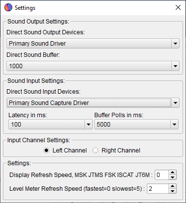
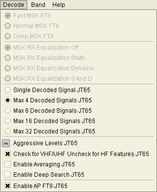

MSHV
Developed by LZ2HV - Christo
Tested by SP9HWY - Jurek and G0LFF - Dick
Ideas about appearance OZ2M - Bo
Linux binaries OZ1PIF - Peter, SK
Linux and ARM binaries G8JVM - Richard
Russian interface R5WM - Vladimir, SK
Russian interface RU4NG - Igor
Translations:
Chinese Simplified and Traditional, VR2UPU - SZE-TO Wing
Spanish and Catalan, EA3KE - Toni Olmo
Portuguese, CU3AK - Jaime Eloy
Romanian, YO3JW - Pit Stefan Fenyo
Danish, 5P1KZX - Michael
Polish, SP5QWB - Bartek
French, ON6DP - Paul
Brazilian Portuguese, PP7CJ - Crezivando Junior
Norwegian, LA3QMA - Kai Gunter Brandt
Italian, IW4ARD - Gianni Matteini
Czech, OK1ABB - Miroslav Skoda
Acknowledgements to K1JT Joe Taylor and WSJT Development Group.
The algorithms, source code, look-and-feel of WSJT-X and related programs, and protocol specifications for the modes FSK441, FT8, JT4, JT6M, JT9, JT65, JTMS, QRA64, ISCAT, MSK144, are Copyright © 2001-2017 by one or more of the following authors: Joseph Taylor, K1JT; Bill Somerville, G4WJS; Steven Franke, K9AN; Nico Palermo, IV3NWV; Greg Beam, KI7MT; Michael Black, W9MDB; Edson Pereira, PY2SDR; Philip Karn, KA9Q; and other members of the WSJT Development Group.The program was borrowed from the open source software K1JT. Only decoders and generators were used from K1JT - WSJT and were rewritten to C ++. Almost the same location of controls was used for easy operation. The software is fully compatible with the modes in WSJT software. The visual interface is QT4.6.8. All required libraries are compiled statically and are embedded in the body of the software. Additional libraries are not necessary. All settings and configurations happen immediately and do not need to be restarted, for example changing the sound settings or rig control.
Information:
- MSK For meteor scatter. Message frame duration is 72 ms and with Sh option 20 ms. Character transmission rate for standard messages is as high as 250 cps.
- JTMS For meteor scatter. Character transmission rate 197 cps.
- FSK441 For meteor scatter. Character transmission rate 147 cps.
- FSK315 For meteor scatter. Character transmission rate 105 cps.
- ISCAT Optimized for meteor and ionospheric scatter at 6 meters. Character transmission rate 16.15 or 32.3 cps.
- JT6M Optimized for meteor and ionospheric scatter at 6 meters. Character transmission rate 14.4 cps.
- FT4 Designed for HF contesting.
- FT8 Designed for fast tropospheric QSOs.
- JT65 VHF/UHF For EME and troposcatter.
- Q65 For ionospheric scatter, tropospheric scatter, rain scatter, TEP, and EME.
- PI4 PharusIgnis4 A digital modulation (MGM) for beacon purposes.
System Requirements:
- SSB transceiver and antenna for one or more VHF/UHF/SHF bands.
- Computer running the Microsoft Windows Xp, Windows 7 32 or 64 Bit.
- For Linux QT5.6.3, Alsa and PulseAudio librarys.
- 1 GHz or faster CPU and 512 MB of available RAM.
- The monitor with minimum resolution 1024x768 or for notebooks 1366x768 (more is better).
- Computer-to-radio interface using a serial port for T/R switching, or VOX control.
- Audio input and output devices supported by the operating system (Sound card full duplex).
- Audio or equivalent USB connections between transceiver and computer.
- A means for synchronizing the computer clock to UTC within ±1 s.
Installation:
- No need for special installation, just extract the archive file with its containing folder wherever you want in the PC.
- Recommended place is a non Operating System drive, for example if OS is in C:\ extract into the D:\MSHV_XXX .
- Starting software from the *.exe file or create a shortcut on the desktop. Do not copy .exe file to desktop.
- If you have an old version of software, please delete the existing shortcut on the desktop if there is one. Extract the archive file with its containing folder and then create a new shortcut on the desktop. If you no longer need the old version you can delete it.
Configuration of software:
- On menu Options - Sound Settings and Display Refresh Speed
- Configure your sound card input settings and sound card output settings, choose Input Channel Settings left or right.
- Refresh function display is made for slow computers. If you use Display Refresh Speed, the update of the displays will vary in speed. This reduces the load on the CPU.
- Level Meter Refresh Speed, slows down the Level Meter update.

- On menu Options - Interface Control
- Interface Control widget contains two communication ports,the first for CAT and PTT, the second only for PTT, if necessary.
- Configure PTT settings via RTS, DTR or Via CAT Command default is RTS.
- Test with button Start Ptt Test.
- Tx Watchdog, use to prevent your transmitter from sending countless messages.
- On menu Options - Macros
- Setup My Call, Grid Locator and TX macros
- Valid Macros are:
- MyCall = %M
- HisCall = %T
- RST = %R
- 4 CharactersLocator = %G4 example = KN23
- 6 CharactersLocator = %G6 example = KN23SF
- Random QRG = %QRG
- Serial Number = %N
- Radio Buttons Kilometers, Miles change distance units.
- Radio Buttons Region 1, Region 2, Region 3 returns default macros by region.
- Radio Button Report returns default macros which contain the report.
- Radio Button Grid returns default macros which contain the grid locator.
- Radio Button RSQ And Serial Number returns default macros which contain the RSQ report and serial number.
- Button GEN MESSAGE immediately generates text messages for transmitting.
- Button SET DEFAULT MACROS returns default macros.
- On menu Options - Radio And Network Configuration
- Tick "Enable PSK Reporter Spotting" in PSK Reporter Settings box to enable spotting.
- In this box, you can change server and port, if needed.
- In the table below it, you should double click on every row to set you personal radio informations.
- On menu Options
- Play Control directly accesses the Windows Play Control mixer.
When transmitting, this control sets an appropriate level for your transmitter. - Record Control as Play Control directly accesses the Windows Record Control mixer. With this control you adjust the noise level from the receiver to reach 0db strength, while monitoring the indicator to the right of the software. It is important for proper decoding.
- Radio And Network Configuration Menu you have to start PSK Reporter Spotting.
- Text Highlight marks specific word(s) in message.
- Using the Generate Messages For Test Tones creates specific messages that generate different tones with the help of which you can set the levels of transmission. The tones are within the 100Hz - 3000Hz, for example, if you type in a message @1000=1000Hz, there are special letter combinations @A=882Hz, @B=1323Hz, C@=1764Hz, @D=2205Hz, which are approximately the frequencies on which the software runs.
- Menu "Time Synchronization" is a shortcut to Data Time Properties. Follow the instructions on the info window to synchronize computer time. For this purpose, you need to be connected to the Internet.
- "Monitor ON At Startup" Start monitor automatically at software startup.
- "View JT65 DF Axis On Display". Change display scale to show DF in mode JT65.
- "Astronomical Data" View view full data for the Moon.
Functions of Software:
- On menu File
- "Open" You can open files previously stored from the software, for decoding and display. The software opens files with the extension *.WAV, sample rate 11025 KHz, mono.
- Drag and Drop function. You can drag and drop a *.wav file from Windows Explorer to Display 1 and they will automatically open and decode. You can drag and drop *.wav files only one by one.
- "View Log" You can open open simple log program.
- "Overwrite Locator Database" Overwrite the existing locator database. For example, when a new software version is released, you can overwrite database from your old software. The locator database are in the file MSHV_XXX/settings/database/msloc_db.dbmh of your old version.
- On menu Palette:
- Palette menu changes the colors of the decoder displays.
- On menu Mode

- Mode menu changes the working type.
- On Menu Decode

- Fast MSK144, is used for slow CPU speed PC.
- Norman MSK144, is used for more sensitive decoding.
- Deep MSK144, is used for fast CPU PC.
- MSK144 RX Equalization Off.
- MSK144 RX Equalization Static, static coefficients for equalization.
- MSK144 RX Equalization Dynamic, coefficients for equalization from you receiver.
- MSK144 RX Equalization S And D, Static and Dynamic together.
- Single Decoded Signal JT65, is used for synchronize only one signal.
- Max 4,8,16,32 Decoded Signals JT65, is used for multy signals synchronization.
- Tune Decoder Aggressive Level and Deep Search Aggressive Level.
- Switch VHF/UHF and HF features for JT65 decoder.
- Enable Averaging JT65, is used for very weak signals need minimum 3 periods to activate average decoding.
- Enable Deep Search JT65 recommended only for VHF/UHF bands.
- Enable AP switch for a priory decoding features.
- Displays area
- The program contains two displays which show the received signal. When display 1 is filled for the period of 30 seconds the information is automatically moved to display 2. Then display 1 starts filling again with new information. A line graph for the time in seconds is being shown at the top of the display. The middle part of the display presents the signal as a waterfall. The graph below presents the signal strength indicator.
- To decode the received signals from the display, click with the mouse in the center of the received ping. When you press the display, two lines appear that show the region of decoding. Pressing the right mouse button makes the region twice larger than pressing the left one. No matter which display you decode, both are always active.
- To the right there is a slider to adjust display settings. Please, in the Windows Record Control mixer, first adjust the noise level from the receiver by positioning the stretch indicator at 0db strength. Secondly, adjust the displays using the Tune Displays slider to show dark blue color with small green dots, as shown in the picture above.
- Under each display there is a button to help you save the data in file. Files are stored in the directory RxWavs. The button displays the file name. The file name contains information about the correspondent's callsign, working type, year and time. There is an exception if the callsign is (/), it is replaced with the word SLASH, for example LZ2HV/P will be saved as LZ2HV_SLASH_P. This is necessary because (/) means the creation of computer path to directory and you cannot save the file.
- For small display resolutions (eg. 800x600 pix) in lefthand display area, button 2D/1D - changes application to work with two or one displays or shortcut F10 for this function, and button D1/D2 - switches displays, if working on one display or shortcut F11 for this function.
- Info Panel
- In the information panel indications of the state of the software are placed.
- Label mode shows the working type of the software.
- Checkbox Auto Decode (Auto Dec) is used for decoding automatically after receiving period or opening a file. Can be activated or not.
- Checkbox Real-Time Decode (RT Dec) is used for decoding in real-time. Can be activated or not.
- Decode label indicates when the software is busy decoding if red light is currently on.
- Label Receive in green color means that the software is currently recording.
- Txing label shows the current text to be transmitted and its red color indicates that it is currently being transmitted.
- Strength indicator of the received signal must be set so that the normal noise of the radio shows 0db, for example .
- Display List
- The display shows the message being decoded . You can copy the message as you left-click once to select the row, then Ctrl+C to copy info and then with Ctrl+V you can paste it to put into the text document. The copied message is specially formatted, for example, FSK441 103330 11.6 s 320 ms 7 dB 26 -18 Hz > ON5VW R26 R26 SP9HWY ON5VW.
- If you want to add TX RPT, just double click the row from column dB or Rpt. If you double-click the row from column Messages with the left mouse button, you will be able to enter the selected row and then again if you press twice in the middle of the continuous text, it will automatically be transferred into the cell TO RADIO, same refers to grid locator.
- Buttons Panel
- Buttons control the receiving and transmission of the software. The special thing about them is that once the monitor is on, it does not stop until you disconnect it with the stop button. In AUTO IS ON, if you press the STOP TX button, AUTO IS ON will be canceled and will be changed to AUTO IS OFF.
- Button RESET QSO clear labels TO RADIO and HIS LOCATOR, and updates the Text Messages Panel.
- Button CLEAR MESSAGES erases all messages in the message list display.
- Button TUNE TX 1000 Hz tone for tuning transmitter.
- Info Clock, Database Panel
and Add to log QSOs
- This Panel displays your RIG CAT frequency (if have CAT control), callsign, locator, date, time and the database for other stations and their locators. On entering the correct locator, the software calculates the direction and distance to the correspondent. When you enter the callsign of your correspondent, if it is in the database, it will be displayed next to the LOOKUP button, after pressing the LOOKUP button, the locator will be automatically placed in the box LOCATOR. Then you will get the data for the direction and distance to the correspondent. If you know the exact locator correspondent, you can enter it into the database manually by pressing ADD button .
- Widget CAT control display you RIG frequency. If RIG is connected to the application, the widget displays frequency, and if RIG is disconnected, after 12-13s. the application returns to default settings. If you switch to Band menu, the application changes the RIG frequency. But if you change Mode, this will not happen. If you want to return to default settings, press button "F".
- The correspondent's callsign appears in TO RADIO. You can add or copy it onto the list manually or by double-clicking in the list.
- The button ADD TO LOG adds QSO in the simple log program. You can view the log from the file menu or press Ctrl+L.
- You can set the receiving report in the RX RPT box .
- Monitor Radio 1 (R1:), Monitor Radio 2 (R2:) option to monitor others, if they support "MSK144 + Sh" option. In all modes, these labels work as "Text Highlight" option as well.
- Squelch Df Callsign Rst Tx Panel
- Squelch is displayed on the top and it can be adjusted as recommended according to default value.
- DF indicates possible differences in frequencies in order to find correspondent signal and it can be adjusted as recommended according to default value.
- RST or RSQ is the estimation of the signal.
- TX SN contest serial number.
- Radio buttons TX FIRST TX SECOND set the period of transmission.
- Button GEN MSG generates the messages from macros and enters texts to the TX messages.
- Button AUTO IS ON / OFF controls if the software runs in automatic mode or not. In AUTO IS ON mode, it begins to work in synchronized pre-defined period (30 s).
- RANDOM QRG is the offset for random contacts in 3 digits max.
- ZAP function: Filter out birdies (narrowband signals of approximately constant amplitude) before attempting to decode. This function requires 10s. of receiving period before beginning to work properly. The filtering period does not show in the display area.
- TX/RX 30s is a period of work 5s, 10s, 15s and 30s.
- Sh option in MSK144 mode (e.g. MSK144 + Short Reporting).
- Label "RXF/RXS" - when the Label "RXF/RXS" or key F9 is pressed, RXing works only during the first or second period.
- Text Messages Panel
- All text messages long 1-28 characters are in this panel. You can write them by hand or generate them by macros. When you press any of the buttons TX1... TX7 its message transmission begins immediately.
- When changing the radio buttons, the message is not transmitted immediately and only shows which of them will be transmitted in the next period.
- Slider "RX Level Correction" change input sound card level +/-12dB.
- Slider "TX Level Correction" change output sound card level.
- Multi Answering Auto Seq Protocol
Switch application to FT8 mode and go to menu options then check "Multi Answering Auto Seq Protocol FT8". In bottom right-hand corner you will see the tabs Queue, Now and Settings.
- Tab Settings:
In the Settings tab there is spin box "Queue Limit:". Its range is from 1 to 50, this is an all queued users. The next spin box is "TX Slots:". Its range is from 1 to 5, this is the number of your emitting signals (TX). It is recommended that you use only one TX Slot if you are not a DX expedition.
The next spin box is "Max Time:". Its range is from 1 to 10 min, this is a how many times the application responds to a single user, if there is no response from the user. The next combo box is CQ types: CQ, CQ DX........Free CQ. To use the Free CQ option, first write a message, then press the button (USE). A valid message must to contain a valid call sign.
Check box "No Dupes": The application checks for calls for possible duplicate QSOs.
Check box "SMsg": Allows TXing special message e.g.(OZ2M RR73; R5WM <LZ2HV> +05).
Check box "Auto Sort": Auto sorting of Queued is activated if Dist column header is marked.
Check box "CQ on free slot": Allows TXing CQ on free slot.
The next two buttons are intended for clearing of users Queued list and Now list.- Tab Now:

Tab Now contains the users you are currently working with.
- Tab Queue:
Tab Queue contains the users waiting for a response from you. You can sort them by call or distance by means of clicking on the header column .
- Working:
It is recommended that you use only one TX Slot if you are not a DX expedition.To start working, you need to set up everything in the Settings tab, and then find room for your CQ by a single-clicking on waterfall and pressing the TX=RX button (small red markers in the top frequency scale).
Then, you need to unlock TX and RX (uncheck LTR), and, by a single click, adjust yout RX frequency slightly up.
IMPORTANT: the green horizontal line in the top frequency scale is your receiving bandwidth. If you have to change it, use the "DF Tol" spin box. Then, change Auto from off to on and application starts working. If you have to switch fast between "Multi Answering Auto Seq Protocol" and normal work protocol, press shortcut Ctrl+` (Switch to US Keyboard, for Ctrl+`, the button is below the Escape button).After QSO application finishes, it will automatically save QSO into the Log. In the Log widget, in Column comment, you will see the MA QSO abbreviation. In this protocol, this is the method for marking QSO connection type.
- Log program
- In the simple log program you can add, edit, delete, find and sort QSOs. You can set the receiving report in the RX RPT box . From menu Band, you can choose the band so it is correctly written in the simple log. Sorting of logs in simple log can be done by clicking on the headers of the columns. To return to the default view, click the Default Sort button.
- From the "Add Log" menu you can add contacts to your log. For example, when a new software version is released, you can add the contacts from your old software. The contacts are in the file MSHV_XXX/log/mshv.edil of your old version.
- In Log Menu there is Export QSOs in ADIF format ("Export Selected In ADIF" or "Export All In ADIF"). Destination of exported files is in ExportLog directory.
- Keyboard Shortcuts
- Ctrl+H MSHV Help
- Ctrl+K Keyboard Shortcuts
- Ctrl+O File Open
- Alt+F4 Exit
- Ctrl+S Sound Settings
- Ctrl+I Interface Control
- Ctrl+M Macros
- Ctrl+P Play Control
- Ctrl+R Record Control
- Ctrl+L View Log
- Alt+L Add Qso To Log
- Alt+M Start Monitor
- Alt+S Stop Monitor
- F1 to F7 Tx1 to Tx7
- Esc TX Stop
- Ctrl+A Toggle Auto On/Off
- Ctrl+G Generate Messages
- Ctrl+1 Save Dislay 1 Data as *.WAV
- Ctrl+2 Save Dislay 2 as Data *.WAV
- Ctrl+Z Toggle ZAP On/Off
- F12 Screenshot
- F9 RX Only First Or Second Period
- F10 Switches number of displays from two to one and vice versa
- F11 Switches displays, if working on one display
- F8 View Spot Dialog.
- Ctrl+` Multi Answering Auto Seq Protocol FT8 (switch to US keyboard)
- Ctrl+Q Multi Answering Auto Seq Protocol Standard FT8/4
- Ctrl+< DF Tol Down (FT8/4,JT65,PI4 Bandwidth)
- Ctrl+> DF Tol Up (FT8/4,JT65,PI4 Bandwidth)
- Ctrl+Click On waterfall adjust RX and TX frequencies together FT8/4
- Shift+Click On waterfall adjust TX frequency FT8/4
- Ctrl+W Show/Hide Waterfall
- Ctrl+T Show/Hide TX Widget
- Ctrl+ = Band Up
- Ctrl+ - Band Down
Directories and files:
- Directory AllTxtMonthly
- Text files for each month are collected in directory AllTxtMonthly containing all TX and RX messages. You can open them with text editor and search content from your connections.
- Do not delete the directory.
- You can delete text files periodically if they are no longer needed.
- Directory ExportLog
- Do not delete the directory ExportLog and its content. It contains all exported log files.
- Directory log
- Do not delete the directory settings and content. They keep you log data.
- Directory RxWavs
- It contains all recorded files during all your work.
- Do not delete the directory.
- Periodically, you can delete files that you do not need.
- Directory Screenshots
- Do not delete the directory. It contains all screenshot files during all your work.
- You can delete screenshot files periodically if they are no longer needed.
- Directory settings
- Do not delete the directory settings and content. They keep all software settings.